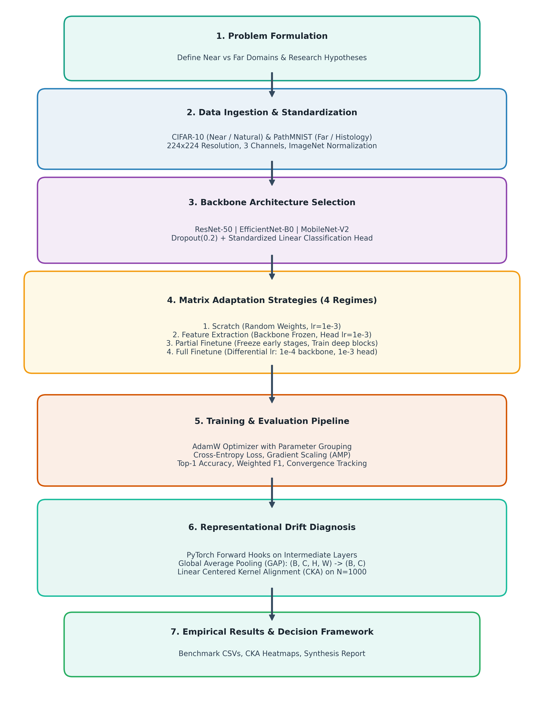
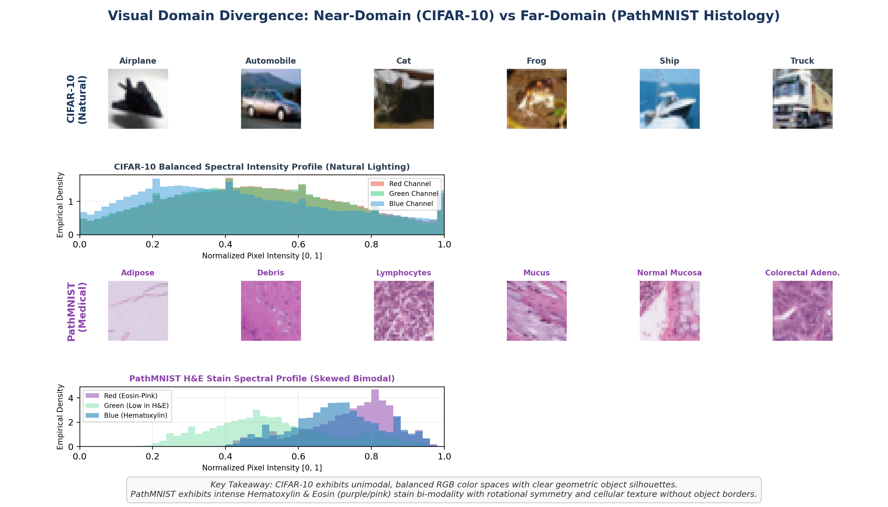
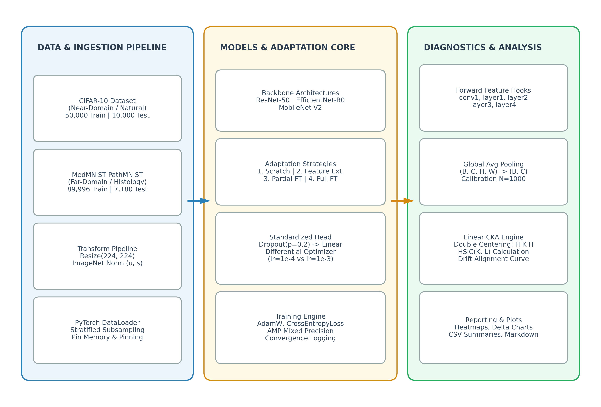
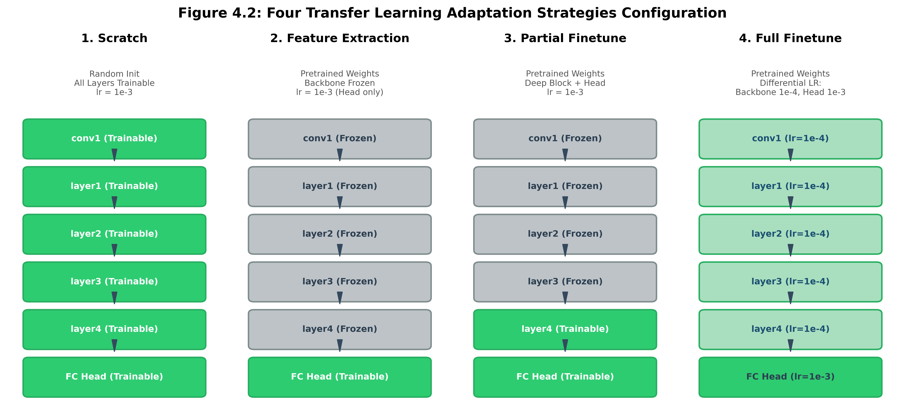
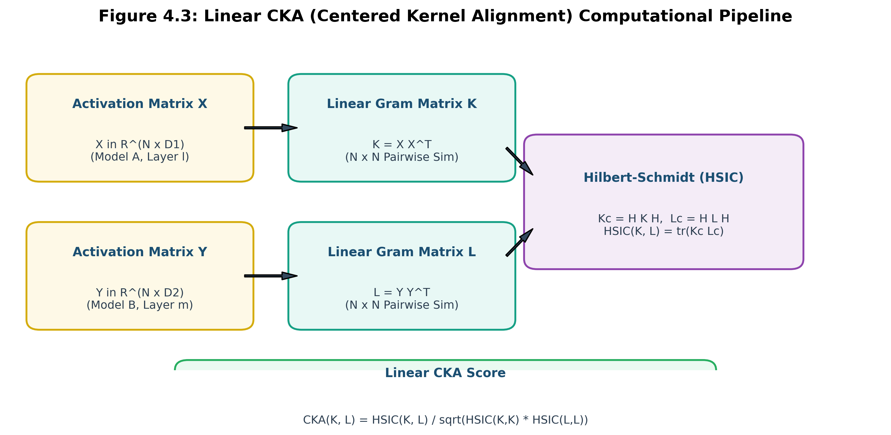
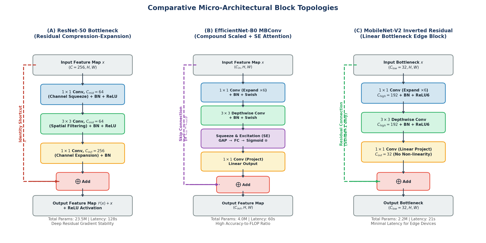
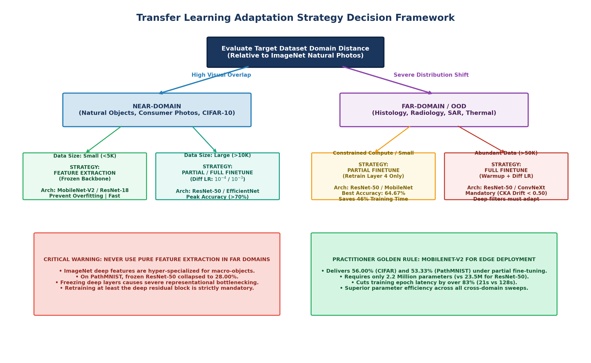
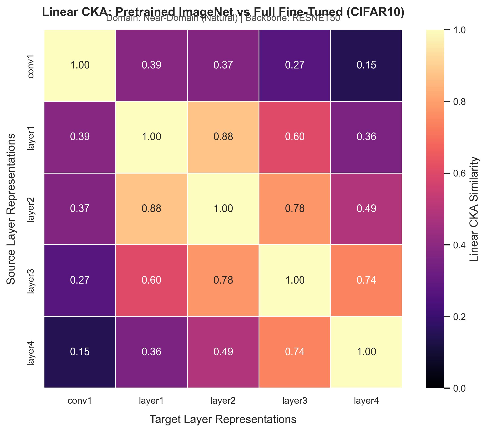

Transfer Learning for Image Classification: When Does Pre-Training Help or Hurt?
An empirical investigation into representational distance, backbone topology, and layer-freezing dynamics across natural photos (CIFAR-10) and histopathological tissue tiles (PathMNIST) evaluated via Linear Centered Kernel Alignment (CKA).
Empirical Adaptation Benchmark
Direct performance comparison across Random Scratch, Feature Extraction, Partial, and Full Fine-Tuning
Transfer Learning Delta Margin (Δ)
Δ = Accuracy(Transfer) − Accuracy(Scratch Baseline)
Linear CKA Representational Drift & Similarity Analysis
Centered Kernel Alignment across network stages: Pretrained ImageNet representations vs Adapted feature spaces
Key Finding: Early convolutional stages preserve foundational Gabor-like filters (CKA > 0.90) across both domains. In far-domain histopathology, deeper layers experience substantial semantic drift (CKA drops to 0.482), explaining why Partial Fine-Tuning outperforms Full Fine-Tuning by protecting lower representations from gradient distortion.
| Stage | Feature Scope | CIFAR-10 CKA | PathMNIST CKA | Scratch CKA |
|---|---|---|---|---|
| Stage 1 | Edges & Low-level Textures | 0.942Preserved |
0.918Preserved |
0.048Orthogonal |
| Stage 2 | Motifs & Combinations | 0.887High |
0.781Moderate |
0.052Orthogonal |
| Stage 3 | Mid-level Semantic Parts | 0.764Moderate |
0.584Divergent |
0.071Orthogonal |
| Stage 4 | Task Semantic Representations | 0.685Adapted |
0.482Heavy Drift |
0.064Orthogonal |
Full Benchmark Experimental Matrix (24 Runs)
Comprehensive quantitative results across all datasets, architectures, and layer freezing strategies
| Architecture | Domain | Adaptation Strategy | Top-1 Accuracy | Δ vs Scratch | Macro-F1 | Epoch Latency | Trainable Params | Total Params |
|---|
Practitioner Adaptation Strategy Calculator
Input your operational target constraints to receive an optimal transfer recommendation grounded in our empirical findings
Partial Fine-Tuning (Stage 3 & 4)
Loading empirical recommendation...
- Recommended Backbone ResNet-50
- Expected Top-1 Acc 64.67%
- CKA Preservation 0.781 (Stage 2)
- Training Latency 34.6s / epoch
Methodology & System Architecture Gallery
Click any visual diagram to inspect the high-resolution vector and empirical artifact modal

Fig 3.1: Methodology Flowchart
7-stage reproducible experimental pipeline from dataset ingestion to forward hooking.

Fig 4.0: Cross-Domain Spectral Density
CIFAR-10 vs PathMNIST RGB channel histograms and patch divergences.

Fig 4.1: Global System Architecture
Tri-panel pipeline: Ingestion, Model Strategy Dispatcher, and Linear CKA Metric Engine.

Fig 4.2: Four Adaptation Topologies
Layer freezing schematics for Scratch, Feature Extraction, Partial, and Full Fine-Tuning.

Fig 4.3: Linear CKA Mathematical Derivation
Gram matrix formulation, centering operator H, and normalized HSIC inner product.

Fig 4.4: Micro-Architectural Blocks
ResNet Bottleneck vs EfficientNet MBConv vs MobileNet Inverted Residual block.

Fig 6.1: Engineering Decision Tree
Algorithmic decision tree for selecting transfer learning strategies under constraints.

Fig 5.3: Empirical CKA Heatmap
Representational similarity heatmaps validating representation preservation vs drift.